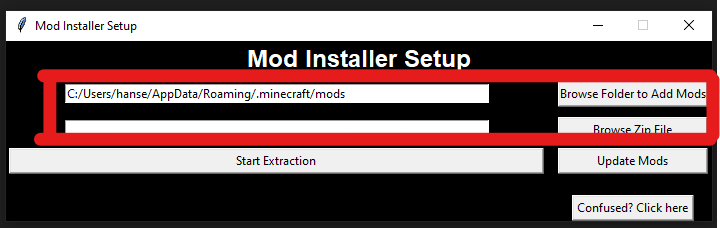
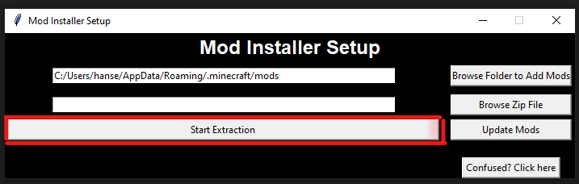
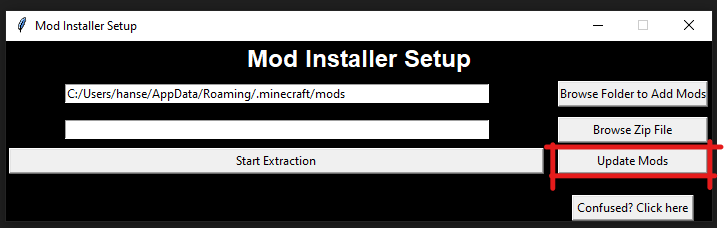

Mod Installer Help Page
This will help you understand what each component does, and will help you navigate the 'confusing' layout.
Part I: Initial Setup
Before going in installing the mods, you must first do the pre-requisits when running the program
You must first install Python version 3.2 or over.
- Go to the Python's dowload page to essentially run the program.
- Click on the button that says "Download Python 3.12.0" or the latest version and do the typical program installation process.
- When opening the installer, it will ask you which installer. Click on Install Now now for just getting the language.

- After python is succesfully installed, click on close at the bottom to finish the installation.

- After everything is setup and the language is installed on the system, click on the
main.py file on the folder and it should show this:

Part II: Program Impression
Before anything, let's look at the program and what each button and input box does.
- When you first open up the main program, you will see two seperate windows:
The actual program itself, used to help implement the mods.

The console, it is used for hansel to better know any ideas of any errors or nerd stuff, so is best not to mess with them and let em know about the scary error.
- On the actual program itself, there are confusing buttons and stuff.
- First, it is the file selections.

The top entry is where the mods are going to be place and the bottom entry is for the zip file location for either updating or adding the mods to the desired mod folder.
- Then, is the extarction button.

Used when you never added the mods from the zip file.
- After that is the update button:

When there are new mods or update mods that, for example, a mod is out of alpha. Then we will update all them.
- And lastly the Confused? Click here will bring you right back to this page if you forgot something!
Part III: Implementing the First Mods
It is assumed that the mods folder in your system is completely empty. (Is best to do so, since it will bring mods to a completely different version then what you normally use)
- Double check if the folder to place the mods in is correct (what is in default is where the mods are always placed if you have the official launcher).
- If you are not using the default launcher, then click Browse Folder to Add Mods, prompting you to select the folder you want to place the mods
- Then, select the Browse Zip File and find the downloaded zip file used for the server. Through the file explorer:

- Click Open at the bottom of the window.

Which will automatically set the path to that zip.
- And then, click Start Extraction
- It will pop-up something like this after you click the Start Execution button.

Which when you click OK it will close the program and you will be able to play now with the installed mods!
Part IV: Updating the Existing Mods
Now for this one, it is assumed that we have played the game and we found some mods or the mod is now fully released.
- Follow step 1 through 3 on Part III. This is bascially the same of selecting the correct folder for the mods and selecting the correct zip folder with the updated mods. But after this is different.
- After the selection was made, click Update Mods and it will pop-up this prompt:

- As the info states, the files in the mods folder will be deleted. But, you have the option to save them in a seperate folder if you have not made one.
- If you press Yes, the program will create a folder in the same place as the program, in the Mod Installer folder, the folder with the saved mods will be called Saved Mods
- If you press No, the program will not create a saved folder and will continue with the process of deleting the mods completely to replace the new mods.
- When pressed Cancel, it will return you back to the main program.
- After your selection, it will either create the folder for the mods you save and the mods will be fully replaced. OR there is no folder at all but mods are fully replaced!